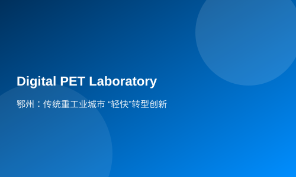

Ezhou: "Light" Transformation and Innovation of Traditional Heavy Industry City
Hubei TV (Reporters: Li Xin, Zheng Jie, Song Jie) Ezhou is a traditional heavy industrial city where the metallurgy and building materials industry has dominated historically. Strategic emerging industries such as biomedicine and environmental protection are virtually non-existent, and its educational resources are also lacking. How can this heavy industrial city of Ezhou achieve transformation and innovation in a 'lightweight' manner?
At Hubei Ruisi Digital Medical Imaging Technology Co., Ltd., engineers are conducting final adjustments on the world's first fully digital PET-CT (pronounced: Pai-teh-CT) machine developed independently by the company. In a few days, this medical imaging device worth 20 million yuan will be transported to a hospital in Guangzhou for clinical trials.
"Equity + Debt" Government Participation but Not Control
Eleven months ago, PET was still just a research project at Wuhan National Laboratory for Optoelectronics. The globally leading technology attracted numerous investment companies seeking cooperation. However, early intervention by social capital would result in the team losing most of their equity. How could PET technology leave the laboratory? Ezhou organized a special task force to visit and discuss.
Ezhou proposed participating but not controlling, meaning ensuring that experts and professors hold more than 50% of the shares, allowing them to control company operations. The first phase industrialization evaluation cost for the PET project is 30 million yuan; Ezhou invested 14.9 million yuan in equity form, while Ruisi Company's required 15.1 million yuan was obtained as a loan secured by patent pledge. In this way, without spending a single penny, Ruisi Company received 30 million yuan in start-up funding, and the project team retained control.
Now, Ruisi not only receives purchase intentions from major hospitals across the country but has also attracted 80 million yuan in social venture capital, with the company's valuation reaching 800 million yuan. Since implementing the equity + debt model, Ezhou City has attracted
75 forward-looking innovative technology achievements such as printable mesoscopic perovskite solar cells and industrialization of key equipment for health Internet of Things have been introduced to Ezhou.
Funding Pre-investment to Nurture Innovation Seeds
Both equity and debt must be obtained after the establishment of a company. More research results are still carried out in the form of university research teams. How can these innovation seeds be captured? Ezhou City and Huazhong University of Science and Technology established an Industrial Technology Research Institute, with the city's finance allocating 60 million yuan annually to fund scientific research projects. Each project receives a research funding at the outset, with joint development by the institute and the team; patents formed are owned by the institute, which then evaluates them in the market for valuation, after which the research team repurchases the patent. This pre-investment solves the financial issues of research teams before establishing companies.
Now, the Ezhou Industrial Technology Research Institute of Huazhong University of Science and Technology has attracted twenty research teams toestablish a presence there. The Innovation Center of China University of Geosciences (Ezhou) Institute of Industry and a number of other innovation centers such as the Drug Innovation Park of Central China Normal University are under active construction.
From January to September, Ezhou City granted 312 patents, a year-on-year increase of 56.78%; the number of valid invention patents per ten thousand people is 1.84, ranking fourth in the province.